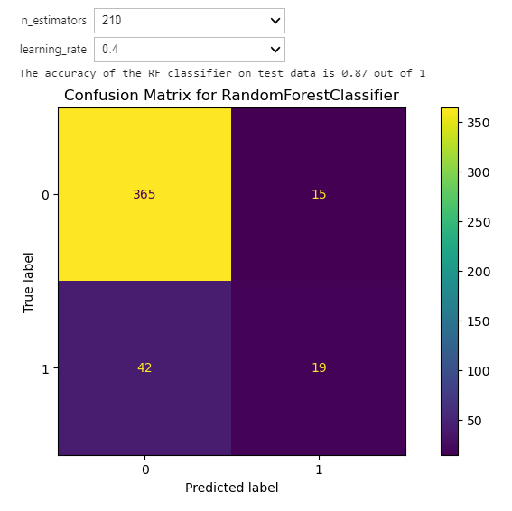

Boosting methods are built sequentially, and one tries to reduce the bias of the combined estimator. The motivation is to combine several weak models to produce a powerful ensemble. More details
Conde example#1
Require library for AdaBoost classifier
from sklearn.ensemble import AdaBoostClassifier
from __future__ import print_function
from ipywidgets import interact, interactive, fixed, interact_manual
from IPython.display import clear_output, display
import ipywidgets as widgets
import matplotlib.pyplot as plt
from sklearn.metrics import ConfusionMatrixDisplay
def conmat(y_test, pred):
fig, ax = plt.subplots(figsize=(10, 5))
ConfusionMatrixDisplay.from_predictions(y_test, pred, ax=ax)
_ = ax.set_title(
f"Confusion Matrix for {rf_clf.__class__.__name__}"
)Code Example#2
Train the AdaBoost model with a number of estimators is 110 and a learning rate is 0.1
def f(n_estimators,learning_rate):
abc =AdaBoostClassifier(n_estimators=n_estimators,learning_rate=learning_rate, random_state=0)
abc.fit(X_train, y_train)
pred = abc.predict(X_test)
conmat(y_test, pred)
print('The accuracy of the RF classifier on test data is {:.2f} out of 1 '.format(abc.score(X_test, y_test)))
interact(f,learning_rate=np.arange(0.1,1,0.1),n_estimators=np.arange(10,800,100));Output;
Train the AdaBoost model with a number of estimators is 210 and a learning rate is 0.4

When the learning rate and the number of estimators change, the misclassification rate also increases, as shown in the confusion matrix. This way, the model can be tuned based on thee datasets to get a robust AdaBoost model.
Note: any external links in this unit will take you to third-party websites, which may ask for your personal details. Please read our privacy policy for more information.